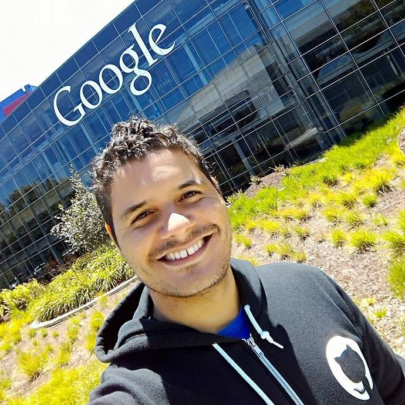
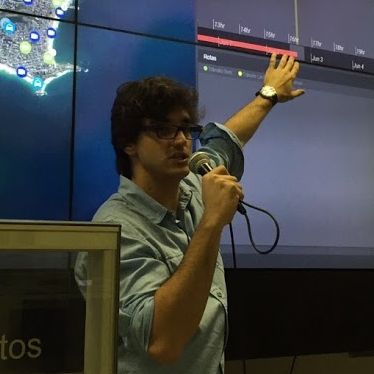

<!DOCTYPE html><html lang="PT-BR"><head><meta charset="UTF-8"/><meta property="og:locale" content="pt_BR"/><meta property="og:url" content="http://frontendcarioca.com.br"/><meta property="og:title" content="Front End Carioca - 2015"/><meta property="og:site_name" content="Front End Carioca"/><meta property="og:description" content="O melhor evento de Front End do Rio de Janeiro."/><meta property="og:image" content="http://frontendcarioca.com.br/assets/image/metatag.jpg"/><meta property="og:image:type" content="image/jpeg"/><meta property="og:image:width" content="700"/><meta property="og:image:height" content="400"/><meta property="og:type" content="website"/><meta name="description" content="Front-End Carioca - Rio de janeiro"/><meta name="viewport" content="width=device-width"/><title>Front End Carioca 2015</title><link href="http://fonts.googleapis.com/css?family=Roboto:400,100,300,500,700,900" rel="stylesheet" type="text/css"/><link href="http://fonts.googleapis.com/css?family=Lato:300,400,700,900" rel="stylesheet" type="text/css"/><link rel="stylesheet" href="assets/style/animated.css"/><link rel="stylesheet" href="assets/style/animate.css"/><link rel="stylesheet" href="assets/style/main.css"/></head></html><body></body><body></body><div class="wrapper"><section id="intro" class="intro"><nav role="navigation" class="row navMenu"><ul class="navMenu--list"><li class="navMenu--item"><a href="#intro" class="active">HOME</a></li><li class="navMenu--item"><a href="#about">SOBRE</a></li><li class="navMenu--item"><a href="#programacao">PROGRAMAÇÃO</a></li><li class="navMenu--item"><a href="#local">LOCAL</a></li><li class="navMenu--item"><a href="#patrocinio">PATROCÍNIO</a></li><li class="navMenu--item"><a href="#contato">CONTATO</a></li></ul><a href="mailto:contato@frontendcarioca.com.br?subject=PATROCINIO - FRONT END CARIOCA 2015" class="btn-menustick mobile">PATROCINIO</a><a href="http://even.tc/front-end-carioca-fila-de-espe" target="_blank" onClick="_gaq.push(['_trackEvent', 'Links', 'Click', 'Inscreva-se'])" class="btn-menustick">LOTE EXTRA</a></nav><header role="banner" data-parallax="scroll"><div data-stellar-ratio="0.9" class="wrapper-intro"><div class="intro-logo animated-logo"><h1>FRONT END CARIOCA</h1></div><div class="row"><div class="intro-datails animated-datails"><span class="intro-datails_text"><time class="intro-datails_time">26 de Setembro, 2015</time> - Rio de Janeiro / Barra da Tijuca</span><br><span class="intro-datails_text sorteio">Os ingressos acabaram, inscreva-se na fila de espera.</span></div><div class="intro-actions"><a href="mailto:contato@frontendcarioca.com.br?subject=PATROCINIO - FRONT END CARIOCA 2015" title="Seja um Patrocinador" class="animated-btns-left">SEJA UM PATROCINADOR</a><a href="http://even.tc/front-end-carioca-fila-de-espe" title="Inscreva-se" target="_blank" onClick="_gaq.push(['_trackEvent', 'Links', 'Click', 'Inscreva-se'])" class="animated-btns-right">LOTE EXTRA</a></div></div></div></header></section><div class="space-top"></div><main role="main" class="wrapper-content-home"><section id="about" class="section section-about"><svg id="Layer_1" version="1.1" xmlns="http://www.w3.org/2000/svg" xmlns:xlink="http://www.w3.org/1999/xlink" x="0px" y="0px" width="2560px" height="150px" viewbox="0 0 2560 150" enable-background="new 0 0 2560 150" xml:space="preserve"><path fill="#FFFFFF" d="M2497,0.3l-256,56l-198-40l-220,40l-44-36l-236,22L1425,0.2L1359,56h-156l-50-27.8l-122,42.2l-204-48	  l-240,46l-107-58l-133,102L117,0.4L0,88.4V150h2560V34.4"></path></svg><div class="row"><div class="title-section"><h2>Sobre</h2></div><div class="content-section"><h3>História</h3><p><font>O Front-end Carioca surgiu de uma ideia dentro da comunidade de desenvolvedores web, tendo como objetivo enriquecer o conhecimento profissional através de ciclos de palestras, workshop, networking e é claro, bastante incentivo. </font><font>Em 2014, na Universidade Veiga de Almeida, realizamos nossa primeira edição e com certeza foi um sucesso, fizemos de tudo para apresentar um ótimo conteúdo aos participantes. </font><font>Já em 2015 estamos vindo com força total e bastante conteúdo legal, propostas de estágios, empregos, parcerias, sorteios de cursos e de livros. Além da principal parte do evento: networking, onde os participantes trocam ideias/experiências e a comunidade cresce.</font></p><h3>Quem vai ao evento?</h3><p><font>Bom, no evento vão todo tipo de pessoas, não há restrições, só queremos compartilhar conhecimentos e mostrar melhores formas de crescer e se dar bem nesta área. </font><font>Geralmente o evento é frequentado por pessoas de todo o Brasil, entre eles profissionais com muitas experiências de mercado, por outro lado, uma galera iniciante querendo aprender mais. </font><font>Acho que para falar a verdade só tá faltando você conosco. Não importa se você é de outra cidade, você será bem vindo. Faça uma força e visite a maior conferência de Desenvolvedores web do Rio de Janeiro. </font><font>Sua experiência profissional nunca mais será a mesma.</font></p></div></div></section><div class="banner banner-one"><h3>UMA NOVA EXPERIÊNCIA :)</h3></div><section id="programacao" class="section section-programacao"><div class="row"><div class="title-section"><h2>Programação</h2></div><ul class="timeline"><li><div class="box-talk"><time class="talk-time">08:00 - 8:40</time><h4 class="sub-title">Credenciamento</h4><p>Não esqueça de trazer seu RG para a identificação e entrega de brindes.</p></div></li><li><div class="box-talk"><time class="talk-time">08:40 - 9:20</time><h4 class="sub-title">Coffee Break</h4><p>Antes do evento começar, aproveite para tomar um café, fazer novas amizades e rever os amigos.</p></div></li><li class="li-speaker"><div class="box-speaker"><div class="box-speaker-media"></div>    <h3 class="sub-title">Ciro Nunes - apresentador</h3>    <p>Senior Front-end Engineer at <a href="http://www.questrade.com" target="_blank">Questrade</a></p>    <p><i class="icon-social-twitter"></i>      <a href="https://twitter.com/cironunesdev" target="_blank" class="hover hover-3d speaker-link"><span data-title="@cironunesdev">@cironunesdev</span></a></p></div><div class="box-talk"><time class="talk-time">9:20 - 9:30</time><h4 class="sub-title">Abertura e apresentações com Pedro Polisenso e André Vitor</h4><p>Nosso amigo Ciro Nunes vai conduzir o evento até o final, apresentando cada palestrante, batendo um papo com eles e o resto você acompanha de perto.</p></div></li><li class="li-speaker"><div class="box-speaker"><div class="box-speaker-media"></div>    <h3 class="sub-title">Vitor Mattos</h3>    <p>Front-end Web Developer at <a href="http://www.vtex.com" target="_blank">VTEX</a></p>    <p><i class="icon-social-github"></i>      <a href="https://github.com/vmattos" target="_blank" class="hover hover-3d speaker-link"><span data-title="@vmattos">@vmattos</span></a></p></div><div class="box-talk"><time class="talk-time">9:30 - 10:10</time><h4 class="sub-title">Peça desculpas, não peça licença</h4><p>Como funciona a cultura de engenharia do VTEX Lab, onde os desenvolvedores não pedem licença, e por que isso os torna tão produtivos.</p></div></li><li class="li-speaker"><div class="box-speaker"><div class="box-speaker-media"></div>    <h3 class="sub-title">Juarez Filho</h3>    <p>Front-end Enginner at  <a href="http://madewithlove.be" target="_blank">madewithlove</a></p>    <p><i class="icon-social-twitter"></i>      <a href="http://twitter.com/juarezpaf" target="_blank" class="hover hover-3d speaker-link"><span data-title="@juarezpaf">@juarezpaf</span></a></p></div><div class="box-talk"><time class="talk-time">10:10 - 10:50</time><h4 class="sub-title">Ionic Adventures: Hybrid Mobile App Development Rocks</h4><p>O Ionic Framework tem tido um crescimento incrível na comunidade de desenvolvimento mobile mostrando que Desenvolvedores Web podem usar HTML5, CSS e JS para criar aplicativos híbridos de qualidade. Nessa palestra entramos numa jornada mostrando o potencial do Ionic Framework e o outras ferramentas que auxiliam na criação de aplicativos extraordinários.</p></div></li><li class="li-speaker"><div class="box-speaker"><div class="box-speaker-media"></div>    <h3 class="sub-title">André Abadesso</h3>    <p>Fundador e Líder Técnico at <a href="http://www.lab21k.com.br/" target="_blank">Lab21k</a></p>    <p><i class="icon-social-github"></i>      <a href="https://github.com/andreabadesso" target="_blank" class="hover hover-3d speaker-link"><span data-title="@andreabadesso">@andreabadesso		</span></a></p></div><div class="box-talk"><time class="talk-time">10:50 - 11:30</time><h4 class="sub-title">Javascript e Smart Cities - Um estudo de caso</h4><p>Nesta palestra vou demonstrar um caso real de aplicação de tecnologias web em um sistema atualmente em uso no Governo do Estado do Rio de Janeiro. Vou passar pelas funcionalidades do sistema explicando as decisões de arquitetura realizadas em cada ponto. As tecnologias abordadas serão: NodeJS, AngularJS, WebSockets, REDIS, entre outras.</p></div></li><li class="li-speaker"><div class="box-speaker"><div class="box-speaker-media"></div>    <h3 class="sub-title">Willian Justen (Biber)</h3>    <p>Desenvolvedor Front-end at <a href="http://www.globo.com" target="_blank">Globo.com</a></p>    <p><i class="icon-social-twitter"></i>      <a href="https://twitter.com/Willian_justen" target="_blank" class="hover hover-3d speaker-link"><span data-title="@Willian_justen">@Willian_justen</span></a></p></div><div class="box-talk"><time class="talk-time">11:30 - 12:10</time><h4 class="sub-title">Criando Novas Experiências com SVG</h4><p>Nessa palestra eu irei mostrar como o SVG pode melhorar e modificar as experiências do usuário em um projeto e como você já pode sair da palestra utilizando.</p></div></li><li><div class="box-talk"><time class="talk-time">12:10 - 14:00</time><h4 class="sub-title">Pausa para o Almoço</h4></div></li><li class="li-speaker"><div class="box-speaker"><div class="box-speaker-media"></div>    <h3 class="sub-title">Ney Simões</h3>    <p>Desenvolvedor Mobile at  <a href="http://www.ciandt.com/br-pt/" target="_blank">CI&T</a></p>    <p><i class="icon-social-twitter"></i>      <a href="https://twitter.com/ney_simoes" target="_blank" class="hover hover-3d speaker-link"><span data-title="@ney_simoes">@ney_simoes</span></a></p></div><div class="box-talk"><time class="talk-time">14:00 - 14:40</time><h4 class="sub-title">Arquitetura CSS com pré-processadores</h4><p>Pensar na arquitetura CSS pode ser muitas vezes complicado, dispendioso e normalmente é visto como algo de pouca relevância. O depois de algumas milhares de linhas de código CSS deixa de ser algo bonito para se tornar o grande vilão de um projeto. Nessa palestra apresentarei soluções usando Smacss, OOCSS e BEM, mas sendo aplicado na realidade dos pré-processadores. POST: http://migre.me/qpWkA</p></div></li><li class="li-speaker"><div class="box-speaker"><div class="box-speaker-media"></div>    <h3 class="sub-title">Caio Vaccaro</h3>    <p>Web Enginner at <a href="https://www.hugeinc.com/" target="_blank">Huge Inc</a></p>    <p><i class="icon-social-twitter"></i>      <a href="https://twitter.com/caiovaccaro" target="_blank" class="hover hover-3d speaker-link"><span data-title="@caiovaccaro">@caiovaccaro</span></a></p></div><div class="box-talk"><time class="talk-time">14:40 - 15:20</time><h4 class="sub-title">Javascript State of the Union</h4><p>Onde estamos e para onde estamos indo? Todos temos a sensação que o Javascript está dominando cada vez mais espaços, mas o que exatamente está acontecendo? Esta palestra abordará desde as diferentes soluções para aplicações cada vez maiores e mais complexas e também os diferentes usos da linguagem. De modularidade à arquitetura de aplicações, de servidor ao desktop, de immutable à aplicações isomórficas.</p></div></li><li><div class="box-talk"><time class="talk-time">15:20 - 15:50</time><h4 class="sub-title">Pausa para o Coffee Break</h4></div></li><li class="li-speaker"><div class="box-speaker"><div class="box-speaker-media"></div>    <h3 class="sub-title">Felipe Amorim</h3>    <p>CTO at <a href="http://www.dojoapps.com.br/" target="_blank">Dojoapps</a></p>    <p><i class="icon-social-github"></i>      <a href="https://github.com/felipeleusin" target="_blank" class="hover hover-3d speaker-link"><span data-title="@felipeleusin">@felipeleusin</span></a></p></div><div class="box-talk"><time class="talk-time">16:00 - 16:40</time><h4 class="sub-title">Enriquecendo o seu front-end com React + Redux</h4><p>Vamos ver como utilizar o React para organizar uma aplicação em componentes e como utilizar o Redux para gerenciar o estado da aplicação e suas mudanças.</p></div></li><li class="li-speaker"><div class="box-speaker"><div class="box-speaker-media"></div>    <h3 class="sub-title">Raphael Amorim</h3>    <p>JavaScript Evangelist						</p>    <p><i class="icon-social-twitter"></i>      <a href="https://twitter.com/raphamundi" target="_blank" class="hover hover-3d speaker-link"><span data-title="@raphamundi">@raphamundi</span></a></p></div><div class="box-talk"><time class="talk-time">16:40 - 17:20</time><h4 class="sub-title">Como ser um Desenvolvedor transante?</h4><p>De maneira divertida e informativa irá abordar o desenvolvimento voltado para o open source. Como começar a contribuir? Qual a semântica ideal? Qual o peso da refatoração, linting, code review e testes? Com essa palestra mais força de vontade e dedicação você consegue liberar o dev star que existe dentro de você.</p></div></li><li class="li-speaker"><div class="box-speaker"><div class="box-speaker-media"></div>    <h3 class="sub-title">Jaydson Gomes</h3>    <p>Senior Front-end Enginner at <a href="http://www.terra.com.br/" target="_blank">Portal Terra</a></p>    <p><i class="icon-social-twitter"></i>      <a href="https://twitter.com/jaydson" target="_blank" class="hover hover-3d speaker-link"><span data-title="@jaydson">@jaydson</span></a></p></div><div class="box-talk"><time class="talk-time">17:20 - 18:00</time><h4 class="sub-title">Futuro do Subjuntivo - Quando vós programardes JavaScript</h4><p>Quando eu falar sobre JavaScript, vós entendereis o que quero dizer. Quando tu aprenderes mais sobre JavaScript, serás recompensado. Quando nós estudarmos sobre o futuro do JavaScript, melhores desenvolvedores nos tornaremos. Quando vós programardes JavaScript, uma nova aplicação nascerá. Quando eles souberem sobre as novas features do JavaScript, abismados ficarão.</p></div></li><li><div class="box-talk"><time class="talk-time">18:00 - 18:30</time><h4 class="sub-title">Encerramento e Sorteios</h4></div></li></ul></div></section><section id="local" class="section section-local"><div class="row"><div class="title-section"><h2>Local</h2></div></div><div class="content-map"><div id="map-canvas"></div><div class="description-map"><a href="https://www.google.com.br/maps/place/Transam%C3%A9rica+Prime+Barra/@-23.0045026,-43.3412166,17z/data=!3m1!4b1!4m2!3m1!1s0x9bda13045cd0a7:0xab2d8c6de86e1407" target="_blank" aria-label="Local do Evento"><h3>Hotel Transamerica Prime Barra - Auditório</h3><p>Av. Gastão Senges, 395 - Barra da Tijuca, Rio de Janeiro/RJ - 22631-280</p></a></div></div></section><section id="patrocinio" class="section section-patrocinio"><div class="row"><div class="content-patrocinio"><div class="title-section"><h2>Patrocínio</h2></div><div class="small-12 medium-4 large-4 large-centered medium-centered columns patrocinio-column"><h3>Patrocinio Premium</h3><a href="http://lab.vtex.com/careers" target="_blank" title="Empresa patrocinadora"></a></div></div><div class="content-parceiras"><div class="title-section"><h2>Empresas Parceiras</h2></div><div class="small-12 medium-4 large-4 columns patrocinio-column"><h3>DESIGN</h3><a href="http://www.aotopo.com.br/" target="_blank" title="Empresa parceira"></a></div><div class="small-12 medium-4 large-4 columns patrocinio-column"><h3>SOCIAL MIDIA &amp; VIDEO</h3><a href="http://devign.com.br/" target="_blank" title="Empresa parceira"></a></div><div class="small-12 medium-4 large-4 columns patrocinio-column"><h3>Inscrição</h3><a href="https://www.eventick.com.br/" target="_blank" title="Empresa parceira"></a></div></div><div class="content-parceiras"><div class="title-section"><h2>Apoio</h2></div><div class="small-12 medium-8 large-8 large-centered medium-centered columns"><div class="small-12 medium-5 large-5 columns patrocinio-column"><a href="http://www.stickersdevs.com.br" target="_blank" title="Empresa de apoio"></a></div><div class="small-12 medium-5 large-5 columns patrocinio-column"><a href="http://novatec.com.br/" target="_blank" title="Empresa de apoio"></a></div></div><div class="small-12 medium-4 large-4 columns patrocinio-column"><a href="http://www.treinaweb.com.br/" target="_blank" title="Empresa de apoio"></a></div><div class="small-12 medium-4 large-4 columns patrocinio-column"><a href="http://braziljs.org/" target="_blank" title="Empresa de apoio"></a></div><div class="small-12 medium-4 large-4 columns patrocinio-column end"><a href="http://riojs.org/" target="_blank" title="Empresa de apoio"></a></div></div><div class="content-parceiras"><div class="title-section"><h2>Convidados</h2></div><div class="small-12 medium-4 large-3 large-centered medium-centered columns patrocinio-column"><p>Maujor - Dinossauro do CSS</p></div></div><div class="content-parceiras"><div class="title-section"><h2>Organizadores</h2></div><div class="small-12 medium-6 large-6 large-centered medium-centered columns patrocinio-column"><div class="small-12 medium-6 large-6 columns"><h3>André Valle</h3><a href="http://github.com/andrevvalle" target="_blank"></a><p>Software Engineer</p></div><div class="small-12 medium-6 large-6 columns"><h3>Pedro Polisenso</h3><a href="http://github.com/pedropolisenso" target="_blank"></a><p>Software Engineer</p></div></div></div></div></section><div class="banner banner-two"><h3>Você não perde por esperar!</h3></div><section id="contato" class="section section-contato"><div class="row"><div class="conduct-code"><a href="http://pt-br.confcodeofconduct.com" target="_blank">Código de Conduta</a></div><div class="title-section"><h2>Acompanhe nossas redes sociais</h2></div><div class="content-section"><ul class="social-list"><li><a href="https://www.facebook.com/frontendcarioca" target="_blank" aria-label="Curta nossa página no facebook" class="facebook"><i aria-hidden="true" class="icon-social-facebook"></i></a></li><li><a href="https://twitter.com/frontendcarioca" target="_blank" aria-label="Nos siga no twitter" class="twitter"><i aria-hidden="true" class="icon-social-twitter"></i></a></li><li><a href="https://github.com/front-end-carioca" target="_blank" aria-label="Github do Front end Carioca" class="github"><i aria-hidden="true" class="icon-social-github"></i></a></li></ul></div></div><footer><div class="row"><div class="logo-footer"></div><div class="content-footer"><a href="mailto:contato@frontendcarioca.com.br" class="email-contact">CONTATO<span>@</span>FRONTENDCARIOCA.COM.BR</a><p>© 2014 / 2015 - FRONT END CARIOCA. TODOS OS DIREITOS RESERVADOS.</p></div></div></footer></section></main></div><script src="//code.jquery.com/jquery-1.11.3.min.js"></script><script src="assets/js/main.js"></script><script src="https://maps.googleapis.com/maps/api/js"></script><script>(function(i,s,o,g,r,a,m){i['GoogleAnalyticsObject']=r;i[r]=i[r]||function(){
(i[r].q=i[r].q||[]).push(arguments)},i[r].l=1*new Date();a=s.createElement(o),
m=s.getElementsByTagName(o)[0];a.async=1;a.src=g;m.parentNode.insertBefore(a,m)
})(window,document,'script','//www.google-analytics.com/analytics.js','ga');
ga('create', 'UA-63816606-1', 'auto');
ga('send', 'pageview');</script>